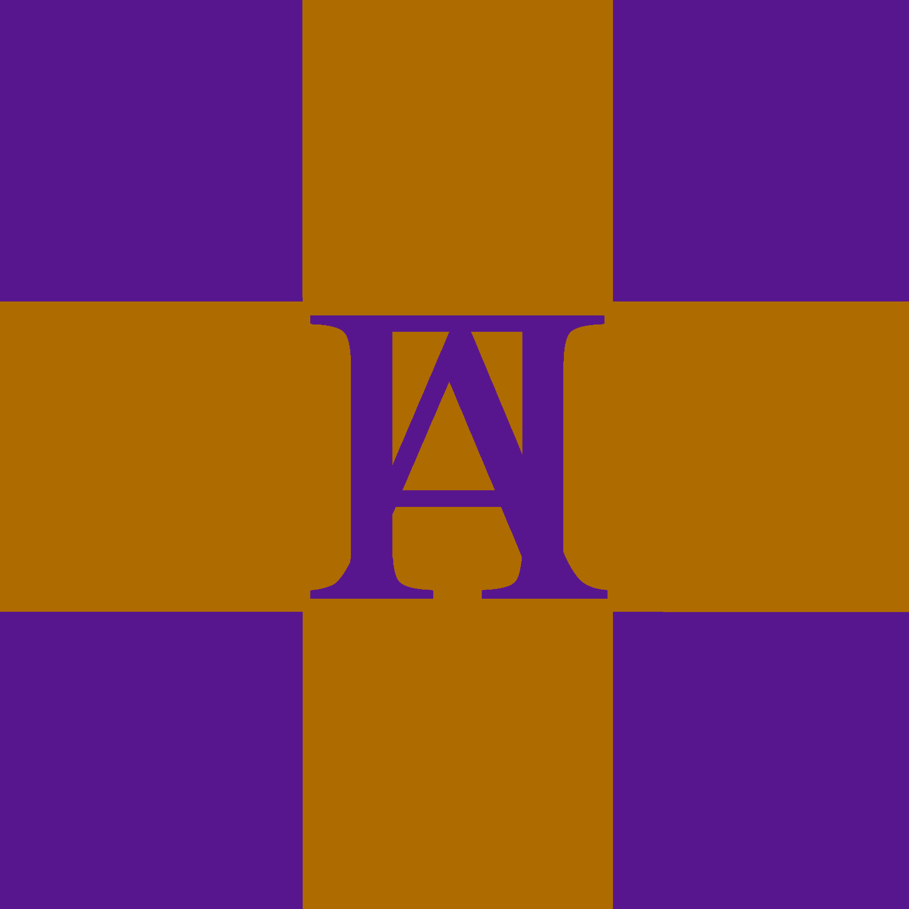

Garfunkia
Garfunkia, officially the Kingdom of Garfunkia is a non-territorial country which is led by the High Council of Garfunkia.
Founded on G6-GY1, Garfunkia is the home state of the Garfunkian faith as laid out in the Laws of Garfunkel.
Contents
HistoryKingdom of Garfunkia | |
|  | |
Religion: |
|
Demonym: |
Garfunkian |
Government: |
Unitary theocratic constitutional monarchy |
Governing Body: |
|
Independence: |
G6-GY1 |
Currency: |
VHS tapes |
Garfunkia, officially the Kingdom of Garfunkia is a non-territorial country which is led by the High Council of Garfunkia.
Founded on G6-GY1, Garfunkia is the home state of the Garfunkian faith as laid out in the Laws of Garfunkel.